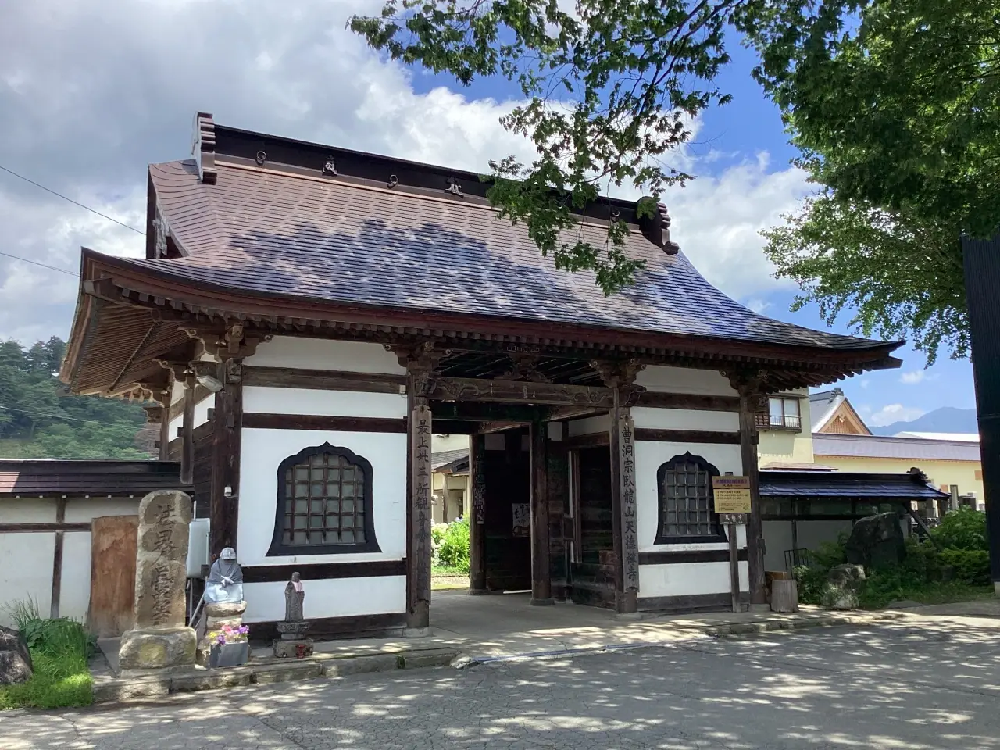
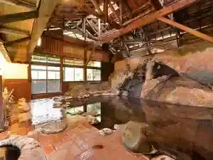
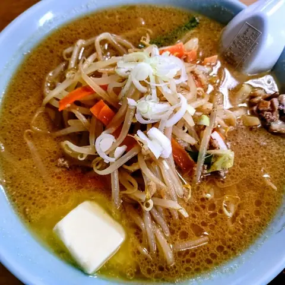
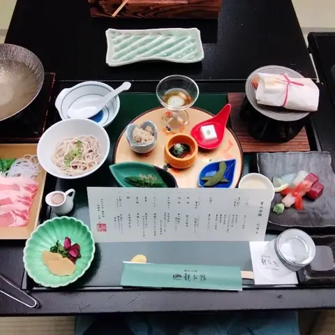
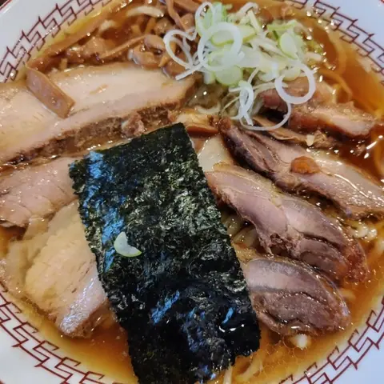
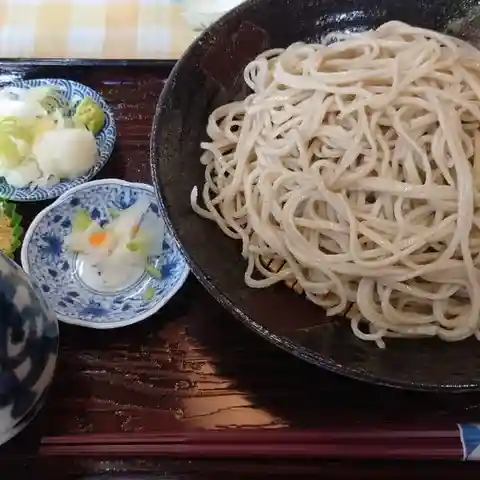
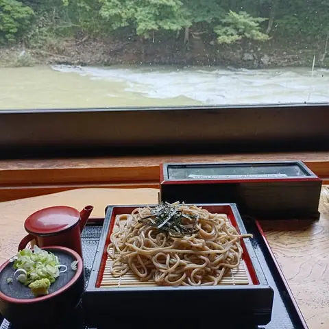
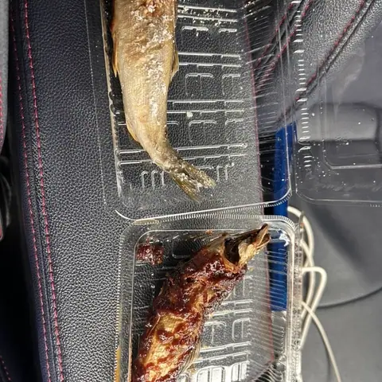
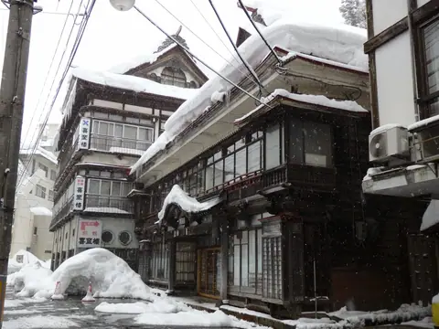
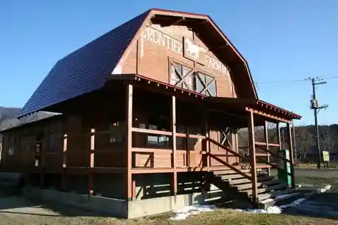

Mogami
Mogami · Yamagata
Mogami
Highlighted on the Yamagata map.

Stay
いづみ荘
Izumi Sou
Lodge in Mogami, Yamagata.
おふろ好きの宿 旅館 しゃくなげ荘
Ofuro Suki No Yado Ryokan Shakunage Sou
Ryokan inn in Mogami, Yamagata.
赤倉温泉 みどりや旅館

Akakura Onsen Midoriya Ryokan
Ryokan inn in Mogami, Yamagata.
瀬見温泉 旅館 小川屋～地産地消のごっつぉ会席と癒しの湯～
Se Ken Onsen Ryokan Ogawa Ya ~ Chisan Chishou Nogottsuo Kaiseki To Iyashi No Yu ~
Ryokan inn in Mogami, Yamagata.
瀬見温泉 四季の宿 まごろく
Se Ken Onsen Shiki No Yado Magoroku
Onsen lodging in Mogami, Yamagata.
Dining
阿部支店

Abe Shiten
Ramen shop in Mogami, Yamagata.
ゆめみの宿 観松館

Yumemino Yado Kan Matsudate
Ryokan restaurant in Mogami, Yamagata.
RA-MEN 与平治

Ra-Men Yohei Osamu
Ramen shop in Mogami, Yamagata.
おおう牧場

Oou Bokujou
Soba restaurant in Mogami, Yamagata.
ヤナ茶屋もがみ

Yana Chaya Mogami
Soba restaurant in Mogami, Yamagata.
西郷屋
Saigou Ya
Soba restaurant in Mogami, Yamagata.
道の駅 もがみ あっつぇ

Michi No Eki Mogami Attsue
Roadside-station eatery in Mogami, Yamagata.
喜至楼
Ki Ita Rou
Inn restaurant in Mogami, Yamagata.
湯守の宿 三之亟
Yumori No Yado San Yuki Kyoku
Inn restaurant in Mogami, Yamagata.
そば処 時空
Soba Tokoro Jikuu
Soba restaurant in Mogami, Yamagata.
しゃくなげ荘
Shakunage Sou
Inn restaurant in Mogami, Yamagata.
ほてい屋
Hotei Ya
Inn restaurant in Mogami, Yamagata.
トトマビ
Totomabi
French restaurant in Mogami, Yamagata.
庄内館
Shounai Kan
Sushi restaurant in Mogami, Yamagata.
はらっ葉
Haratsu Ha
Soba restaurant in Mogami, Yamagata.
クラブ食堂
Kurabu Shokudou
Shokudo diner in Mogami, Yamagata.
もがみくじら餅加工所
Mogamikujira Mochi Kakou Tokoro
Japanese sweets shop in Mogami, Yamagata.
湯の原
Yu No Hara
Inn restaurant in Mogami, Yamagata.
芭蕉茶屋
Bashou Chaya
Soba restaurant in Mogami, Yamagata.
前森高原ビアハウス
Mae Moritaka Hara Biahausu
Yakiniku (grilled meat) restaurant in Mogami, Yamagata.
旅館 小川屋
Ryokan Ogawa Ya
Inn restaurant in Mogami, Yamagata.
まごろく
Magoroku
Inn restaurant in Mogami, Yamagata.
繁昌軒
Hanjou Ken
Ramen shop in Mogami, Yamagata.
Sights
Semi Onsen

A quiet hot-spring town on the Oguni River, long known as Shinjo's retreat. Legend says it was discovered by Minamoto no Yoshitsune's party as they fled toward Hiraizumi.
Wakuwaku Farm Maemori Kogen

Maemori Kogen spreads over 200 hectares, with cottages, horse-riding and other outdoor activities in open grassland, plus a soba restaurant serving hand-made soba.
The large Japanese Judas tree of Mt.Gongen
The large Japanese Judas tree of Mt.Gongen